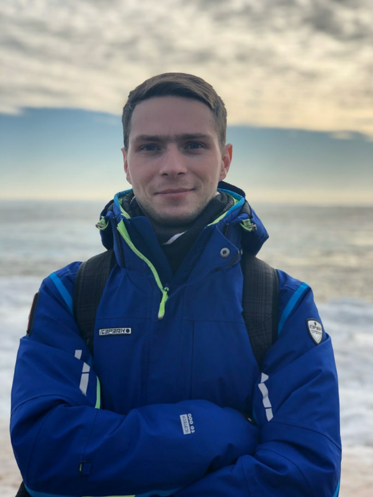

Михаил Васильевич Голубев

Биография
Родился в городе Дзержинск Нижегородской области 11 ноября 1992. С детства отличался
повышенным интересом к вопросу "Как устроен этот мир?". Любимые книги в детстве - энциклопедии
"Росмэн". Учился в школе №22 с углубленным изучением французского языка. В 8 лет пошел
учиться в музыкальную школу на скрипке, гитаре. Первая официальная работа - в 16 лет.
После школы учился в музыкальном колледже на эстрадном отделении. Служил в в/ч 83272
(мл. сержант). Проявил себя как ответственный человек. Детальный подход к любому делу.
Честен, вынослив, добр.
- Интересы:
- - работа, музыка, наука, автомобили
- Ценности:
- - саморазвитие, навыки, знания, дружба